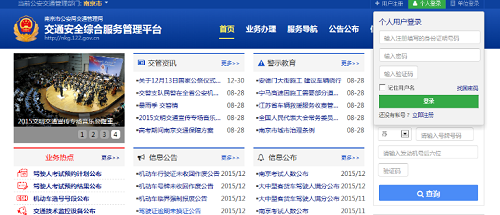
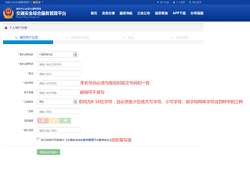
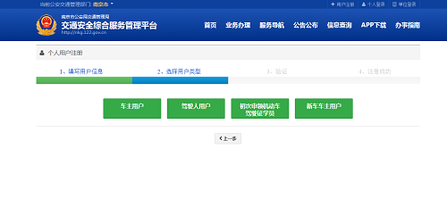
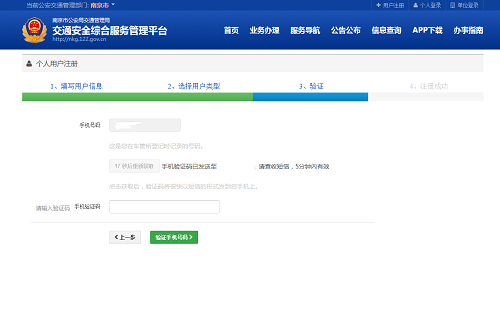
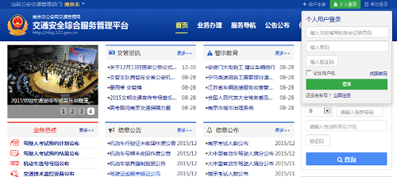
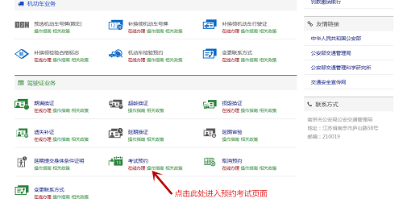

考试预约步骤
因南京市车辆管理所要求，自2016年1月18日起，所有驾校学员实行网络自主预约考试；请各位学员按要求登录网址注册账号、预约考试。
在此，特将注册账户、预约考试步骤说明如下：
 登录网址
登录网址
网站地址为：http://nkg.122.gov.cn/;
 点击右上角个人登录→点击立即注册（如下图所示）
点击右上角个人登录→点击立即注册（如下图所示）

 填写注册账户相关信息
填写注册账户相关信息

(1)本人名下无机动车且初次申领驾驶证的学员请选择初次申领机动车驾驶证学员；
(2)已拥有驾驶证，再次申领新车型驾驶证的学员请选择驾驶人用户，需填写档案编号；
(3)本人名下已拥有机动车的学员请选择车主用户，需填写车牌号和发动机号后六位。
 选择注册用户类型
选择注册用户类型

 验证
验证

 注册成功
注册成功
 登陆
登陆

 预约考试
预约考试

(1)考试预约流程请参考:http://nkg.122.gov.cn/views/help/help-netksyy.html
(2)考试预约流程请参考:http://nkg.122.gov.cn/views/help/help-netqxyy.html
注意事项
(1)凡是注册过程当中因手机号码发生变更、借用他人号码等情况导致无法完成注册的学员，请携带本人身份证到所在报名点办理号码变更手续；
(2)我校学员在预约考试过程当中请仔细核对考场名称，必须选择天保考场，如发生错误，将无法在别的考场完成考试；
(3)各科目考试一旦预约成功，如有特殊情况不能参加考试，请及时取消预约；不取消或取消失败的，必须按照预约时间参加考试，不得弃考 ；一旦弃考，除成绩按0分计算，补考需交补考费以外，还会被系统视为恶意预约，您的账户也将受到相应惩罚；
(4)周四夜考的学员当天无法参加科目四考试，请学员在科目三及格后，回家自行在网站上预约科目四考试时间。